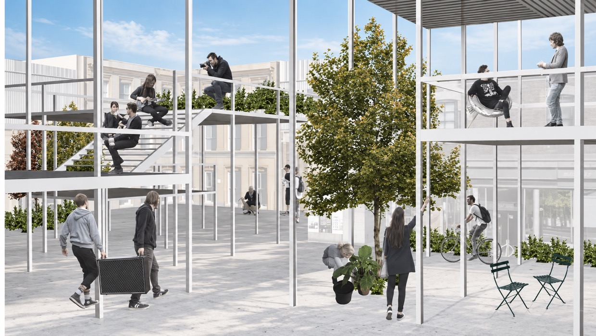
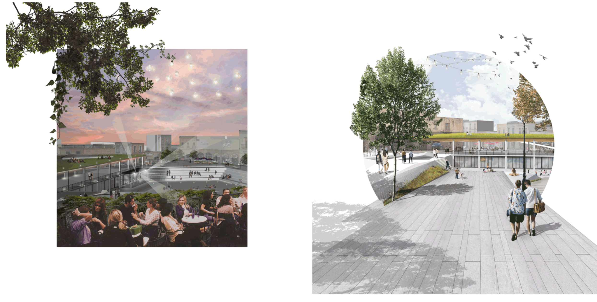
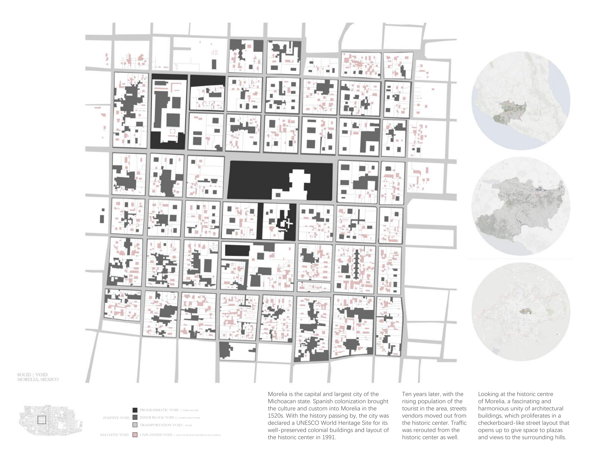
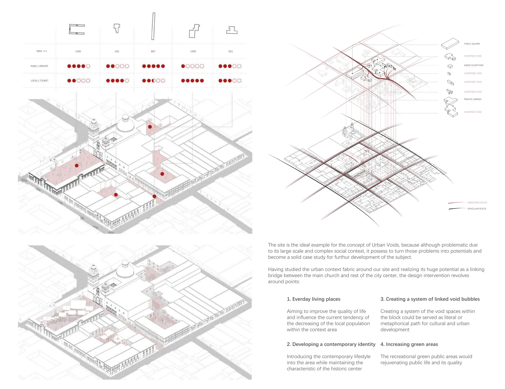
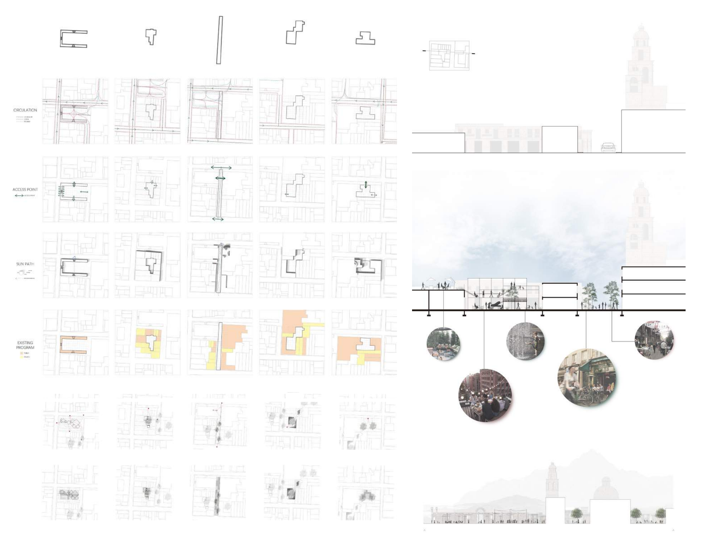
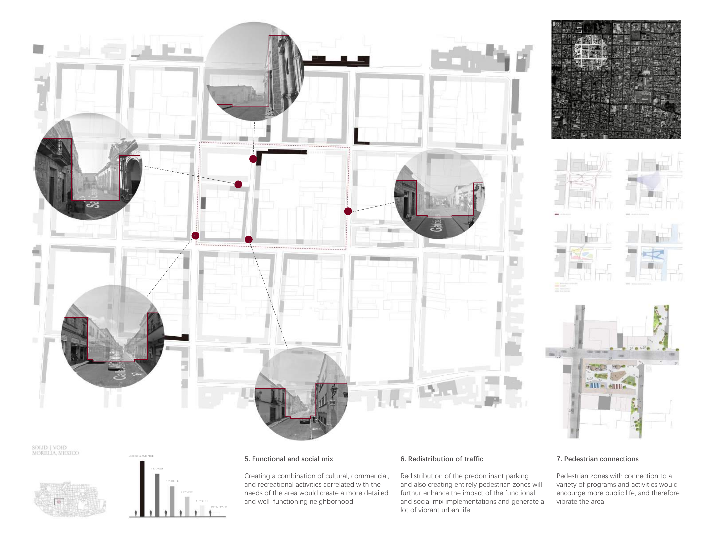

Read the historic centre
Start from Morelia's pink-stone fabric, checkerboard streets, plazas and relationship to the surrounding hills.


Morelia's historic centre is a harmonious field of pink-stone buildings, checkerboard streets, plazas and views toward the surrounding hills. This visiting-school studio looked beyond the core to study the walking distance between adjacent areas and the transitions that could carry its character forward.
Existing conditions were recorded as layers of infrastructure and flow, activity and time, verticality and pattern. These readings informed a proposal for linked public spaces, mixed programmes and more pedestrian connections.
Start from Morelia's pink-stone fabric, checkerboard streets, plazas and relationship to the surrounding hills.
Compare public squares, inner courtyards, private gardens, transport voids and undefined leftover spaces.
Positive / negative voids
Program and adjacency
Street and block reading
Redistribute traffic and parking while connecting a wider range of programmes and everyday activities.
Functional and social mix
Traffic redistribution
Pedestrian connections
Translate the mapping into a sequence of public places that can support new forms of urban life without losing the cultural heart.
Morelia is the capital of Michoacan and a city shaped by Spanish colonial history. Its well-preserved historic centre is defined by pink-stone buildings, a checkerboard street layout, plazas and views toward the surrounding hills.
The studio looked beyond the cultural core to understand how streets, blocks, open spaces and everyday movement could form a more continuous pedestrian experience.

The project treated open space as an active urban framework rather than leftover space. Existing conditions were compared through program, enclosure and movement to understand where public life could be intensified or connected.
A civic room with a clear collective role.
A contained shared space within the block.
A smaller landscape condition with limited access.
A residual space that could become part of a wider network.

Circulation, access and programme were studied together. The proposal questioned the dominance of parking and through-traffic, then used pedestrian links to connect cultural, commercial and recreational activities.
In this reading, pedestrian space is not an isolated surface treatment. It is the connective tissue between different forms of daily use.


The final direction combined cultural, commercial and recreational activities with a more legible pedestrian structure. Its ambition was to extend the historic centre's public life into adjacent areas while keeping the city's inherited character present.
Pair activities with the needs of the area to create a more detailed and well-functioning neighbourhood.
Reduce the dominance of parking and create entirely pedestrian zones where public life can gather.
Link programmes and activities so walking becomes a reason to stay, meet and move through the area.
Project title, studio context, date and visual evidence are transcribed from the supplied portfolio PDF. The source identifies the work as a spring 2018 visiting school studio at the Architectural Association.
Back to top ↑